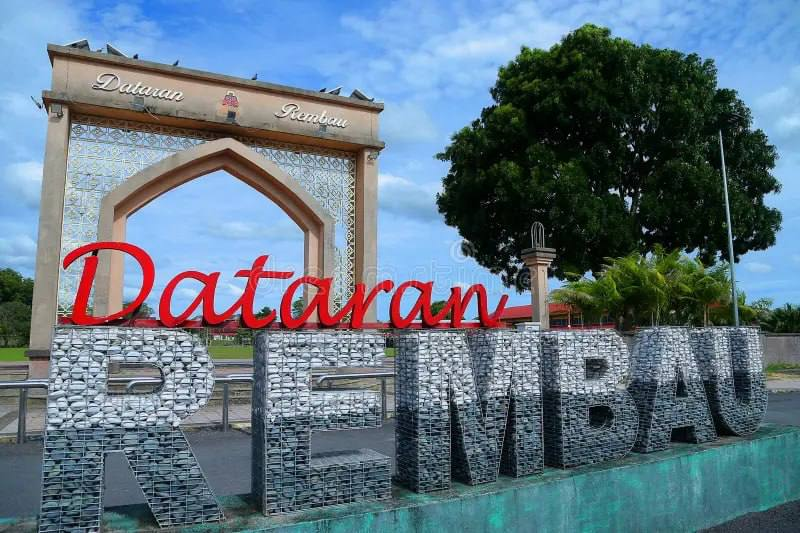

Rembau has a rich and diverse history shaped by its people, land and heritage. From its early beginnings to a growing modern town, Rembau continues to honour its past while embracing the future.
Pekan Rembau is one of the oldest towns in Negeri Sembilan and serves as the administrative and commercial centre of the Rembau District [1]. Its development is closely connected to the Minangkabau migration and the establishment of the Luak Rembau, one of the traditional districts that practise Adat Perpatih [1]. The town gradually grew as a centre for governance, trade, and community life [1].

Rembau's story began long ago, shaped by its fertile land, natural resources and early settlements.
With the arrival of the railway, Rembau grew into a vibrant town and an important trade and transit centre.
Our diverse communities have lived together for generations, preserving traditions, festivals and local wisdom.
Today, Rembau continues to progress while valuing its rich heritage and cultural identity.
The area was originally inhabited by the Biduanda (Jakun) community, who are recognised as the earliest settlers of Rembau [1].
Minangkabau leaders Dato’ Laut Dalam and Dato’ Lela Balang established the Luak Rembau administration, laying the foundation for the traditional governance system that continues today [1].
Pekan Rembau developed as a local trading and administrative centre, supporting agriculture and commerce within the district [1].
The arrival of the railway and improved road connections boosted economic activities and linked Pekan Rembau with neighbouring towns such as Seremban and Tampin [1].
Pekan Rembau remains the district’s administrative centre while preserving its cultural heritage through museums, historical buildings, and the continuing practice of Adat Perpatih [1].
"Our history is the foundation of our identity, guiding us towards a stronger and brighter future."